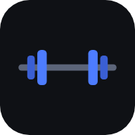
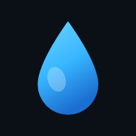

앱 고르기
둘 다 설치해서 쓰는 웹앱이에요. 열어서 홈 화면에 추가하세요.
짐메이트 주소가 바뀌었어요.
두 앱이 서로의 설치를 방해하던 문제를 고치면서 짐메이트가 한 칸 안으로 들어갔어요. 아래에서 짐메이트를 연 다음
홈 화면에 다시 추가
해 주세요. 기록은 그대로 남아 있어요.

짐메이트
헬스 루틴을 만들고 세트마다 체크
›

마중물
마신 물을 기록하고 제때 알림
›
홈 화면에 추가하는 법
아이폰 사파리 — 공유 버튼 → 홈 화면에 추가
안드로이드 크롬 — 오른쪽 위 ⋮ → 앱 설치
앱마다 따로 추가하면 아이콘이 각각 생겨요.